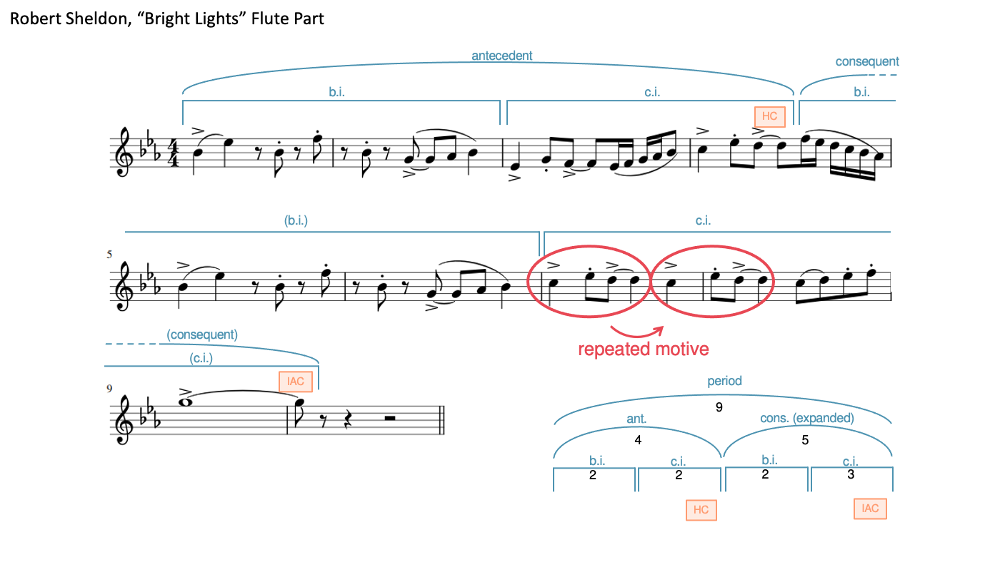
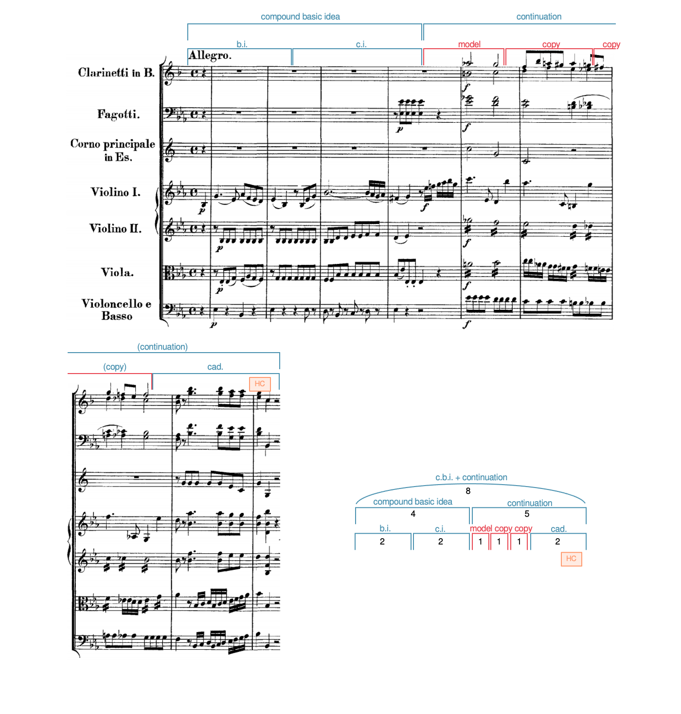
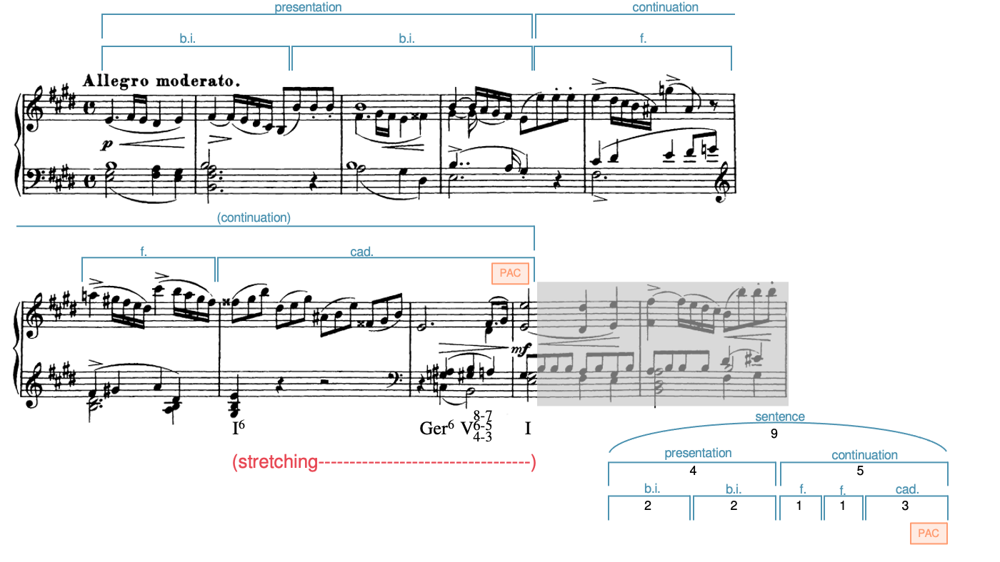
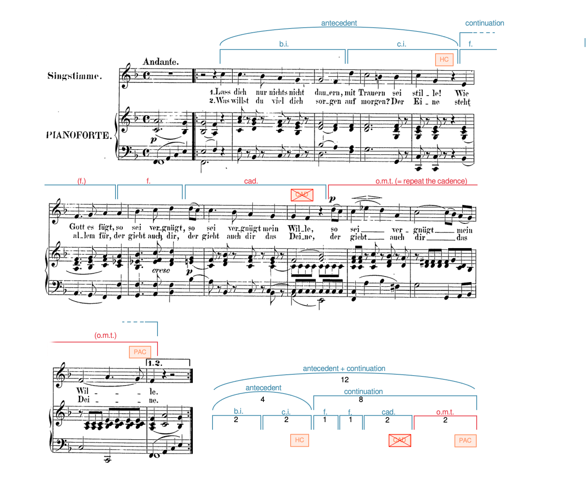
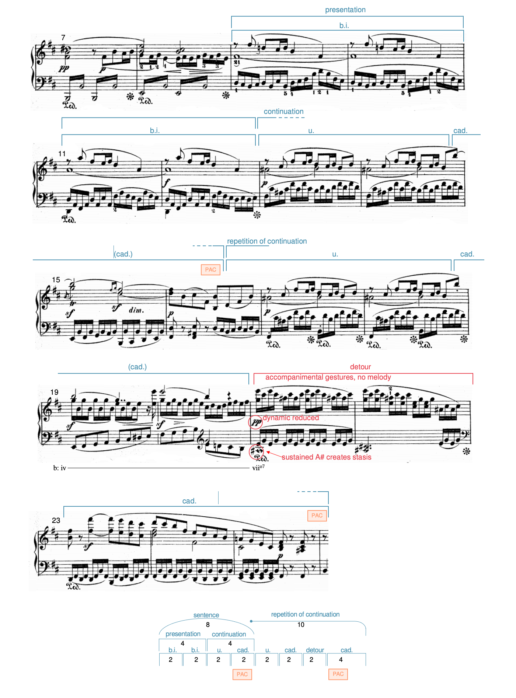
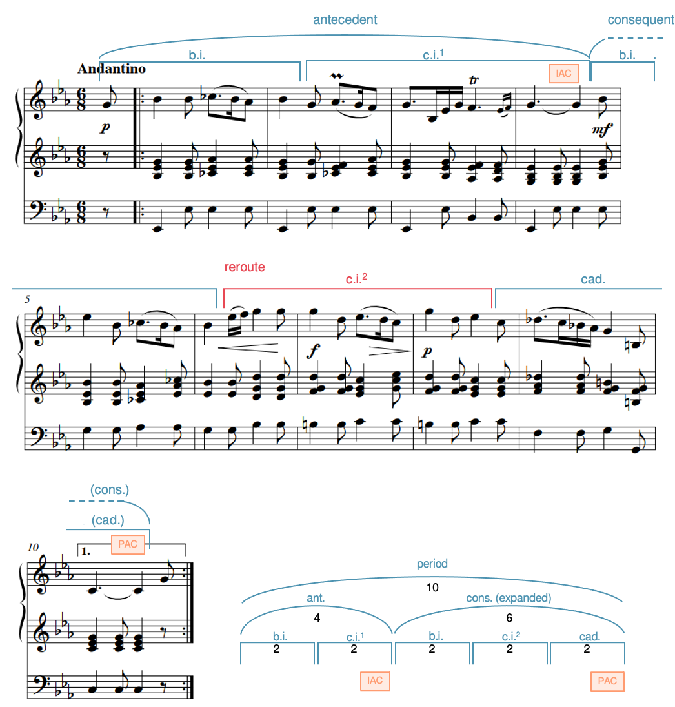
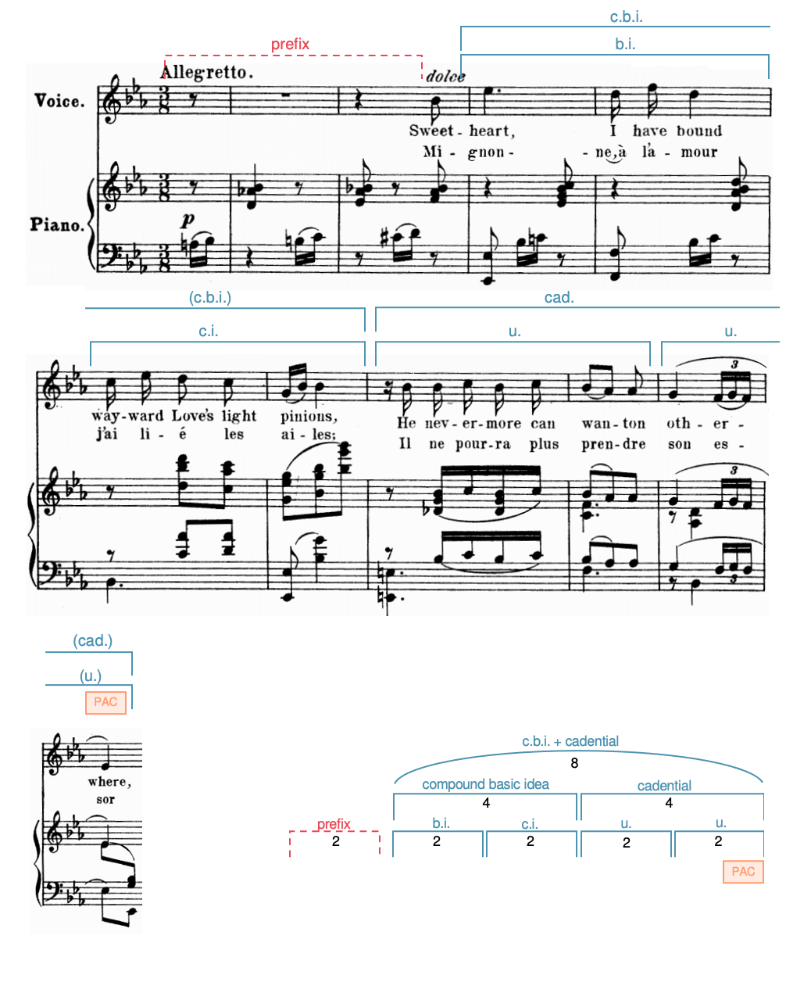
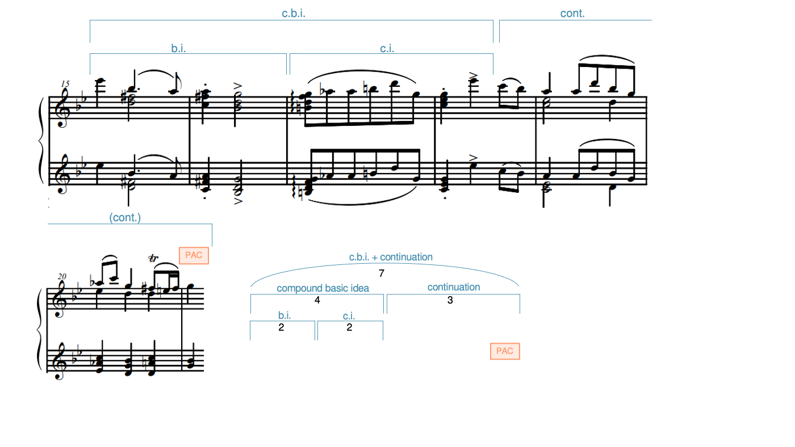

Open Music Theory：繁體中文版
樂句層次的擴展與縮減
「預期長度」是什麼意思？
本章概述幾種樂句擴展與縮減的技巧，雖未涵蓋所有可能，已包括數種較常見的做法。這些技巧的術語很容易多到令人難以掌握；最重要的是能辨認樂句何時比預期更長或更短，並說明長度差異如何產生。
查看英文原文
Key Takeaways
- Expansions make a phrase last longer than expected. They can be internal (between the beginning and ending of the phrase) or external (before the beginning or after the end).
- Internal expansion techniques include repetition, stretching, one-more-time technique, and alternative path.
- External expansions fall into two categories:
- Prefixes occur before the beginning, such as an introduction.
- Suffixes occur after the cadence, such as post-cadential extensions, codettas, and codas.
- Contractions make a phrase shorter than expected.
The terms expansion and contraction refer to ways composers play with the expected length of a phrase.
What does "expected length" mean?
- When a phrase invokes one of the archetypes without following it exactly, we can often identify how long a closer representation of that archetype would have been.
- Sometimes the cadential motion of the phrase allows us to anticipate where a cadence might occur, but the phrase evades the expected cadence.
- Sometimes a piece states two versions of a phrase—one unexpanded and the other expanded—giving us a model to which we can compare the expanded version.
Expansion refers to the process of making a phrase longer than we expect. This lengthening might occur within the phrase ("internal expansion") or outside of the phrase ("external expansion"). Contraction refers to the process of making a phrase shorter than we expect, and it always occurs within a phrase.
In this chapter, we offer an overview of several techniques for phrase expansion and contraction. This isn't an exhaustive list, but it covers several of the more common techniques. The terminology concerning expansion and contraction techniques can quickly become overwhelming. What's most important is to be able to recognize when a phrase is longer or shorter than expected and to be able to describe what's creating the difference in length.
查看英文原文
Internal Expansions
The four techniques we discuss below—repetition, stretching, one-more-time, and alternative path—all occur within a phrase: after the phrase's beginning, but before its cadence. Often, composers use these techniques in combination; in fact, it's relatively rare to find a phrase that's expanded using only one technique.
重複
{kind=link}

- Flute Part＝長笛聲部；
- repeated motive＝重複的動機；
- period＝樂段；
- expanded＝已擴展。
- b.i.＝基本樂思；
- c.i.＝對比樂思；
- ant.／antecedent＝前句；
- cons.／consequent＝後句；
- HC＝半終止；
- IAC＝不完全正格終止；
- PAC＝完全正格終止。
- 圖中9小節＝前句4＋後句5；
- 後句由2小節基本樂思與3小節對比樂思組成。
作曲家重複材料時，有時會因重複而增加長度。
{kind=link}

- compound basic idea／c.b.i.＝複合基本樂思；
- continuation＝延續部；
- model＝原型；
- copy＝移位重複；
- cad.＝終止樂思；
- b.i.＝基本樂思；
- c.i.＝對比樂思；
- HC＝半終止。
延續部由1+1+1+2構成，共5小節，前面複合基本樂思4小節。
- Clarinetti in B＝B♭調單簧管；
- Fagotti＝低音管；
- Corno principale in Es＝E♭調獨奏法國號；
- Violino I／II＝第一／第二小提琴；
- Viola＝中提琴；
- Violoncello e Basso＝大提琴與低音聲部；
- Allegro＝快板。
例 2 呈現變化重複，將整個單位重複以增加長度：四小節的複合基本樂思（c.b.i.）之後，接上五小節的延續部。延續部以模進開始，使原本預期的四小節擴展成五小節。
並不是所有重複都會形成擴展！請區分出乎預期、增加長度的重複，以及較可預期的重複，例如呈示部中的基本樂思重複。
查看英文原文
Repetition
Sometimes when a composer repeats material, the repetition creates extra length.
Example 1 shows an exact repetition of a motive within a unit that creates extra length: a four-measure antecedent is followed by an expanded five-measure consequent. The extra length results from a repeated motive within a unit.
Example 2 shows a varied repetition in which a whole unit is repeated to add extra length: a four-measure compound basic idea (c.b.i.) is followed by a five-measure continuation. The continuation begins with a sequence that expands it from the expected four measures to five.
Not all repetitions create expansion! Be careful to differentiate expansion-creating repetitions, which are unexpected, from more predictable repetitions, such as when the basic idea is repeated in a presentation.
拉長
{kind=link}

- presentation＝呈示部；
- continuation＝延續部；
- sentence＝樂句型；
- b.i.＝基本樂思；
- f.＝片段；
- cad.＝終止樂思；
- stretching＝拉長；
- PAC＝完全正格終止。
9小節＝呈示部4＋延續部5，後者為1+1+3。
Ger⁶表示德國增六和弦。
Allegro moderato＝中庸的快板。
有時，作曲家會增加某個和聲或旋律的持續時間，讓它比預期更長。這時，我們說包含該和聲或旋律的單位被拉長（stretching）了。在例 3 中，四小節的呈示部之後，接上五小節的延續部。延續部的終止樂思被拉長：[latex]\mathrm{I}^6[/latex] 與終止屬和聲各自持續一整小節，而非原本共同出現在一個小節內；這個屬和聲又以 [latex]\mathrm{Ger}^6[/latex] 與終止 [latex]^6_4[/latex] 加以裝飾。
查看英文原文
Stretching
Sometimes composers will lengthen a harmony or melody by increasing its duration so that it lasts longer than expected. When that happens, we say that the unit that contains the harmony or melody has been stretched. In Example 3, a four-measure presentation is followed by a five-measure continuation. The continuation's cadential idea is stretched when a [latex]\mathrm{I}^6[/latex] chord and the cadential dominant (embellished by a [latex]\mathrm{Ger}^6[/latex] and a cadential [latex]^6_4[/latex]) each last for a full measure as opposed to both occurring within a single measure.
再來一次技巧（o.m.t.）
Janet Schmalfeldt（1989）提出「再來一次技巧」（one-more-time technique），包含三個步驟：（1）音樂嘗試形成終止式；（2）這個終止式被迴避；（3）音樂再次嘗試終止。再次嘗試時常使用相同材料，讓人感到音樂像是「往回退了一步」；但也可能換用不同的終止材料。
{kind=link}

- antecedent＝前句；
- continuation＝延續部；
- b.i.＝基本樂思；
- c.i.＝對比樂思；
- f.＝片段；
- cad.＝終止樂思；
- o.m.t. (= repeat the cadence)＝再來一次（重試終止）；
- 劃叉的CAD表示預期終止未完成；
- HC＝半終止；
- PAC＝完全正格終止。
- Singstimme＝歌唱聲部；
- Pianoforte＝鋼琴；
- Andante＝行板。
原譜歌詞保留。
例 4 在第 10 小節提出一次終止，但它被迴避了，進行為 [latex]\mathrm{cad^6_4 – V^4_2 – I^6}[/latex]。接著，以再來一次技巧重複終止樂思。這個再來一次單位也被拉長：旋律 C–B♭–A–G 的下行花了兩小節，原本只需一小節；終止 [latex]\mathrm{^6_4}[/latex] 解決到 [latex]\mathrm{V}^7[/latex]，也花了一整小節，原本只需半小節。
查看英文原文
One-More-Time Technique (o.m.t.)
Coined by Janet Schmalfeldt (1989), the one-more-time technique involves three steps: 1) the music tries to cadence, 2) the attempted cadence is evaded, and 3) the music retries the cadence. The re-tried cadence often uses the same material, such that it feels like the music is "backing up," but it may also retry the cadence with different cadential material.
In Example 4, a cadence is proposed in m. 10, but it's evaded ([latex]\mathrm{cad^6_4 – V^4_2 – I^6}[/latex]). A one-more-time repetition of the cadential idea ensues. The one-more-time unit is stretched: notice that it takes two measures (compared to one originally) for the melody to descend C–B♭–A–G, and it takes a full measure (compared to a half measure originally) for the cadential [latex]\mathrm{^6_4}[/latex] to resolve to [latex]\mathrm{V}^7[/latex].
替代路徑
當出乎預期的新材料，使樂句暫時或永久偏離原本走向終止式的路線，就形成替代路徑（alternative path）。暫時偏離稱為繞道（detour）：在真正抵達終止式之前，先返回該樂句先前的材料。永久偏離則稱為改道（reroute）：不返回樂句先前的材料，便走向終止式。
{kind=link}

- presentation＝呈示部；
- continuation＝延續部；
- repetition of continuation＝延續部的重複；
- sentence＝樂句型；
- b.i.＝基本樂思；
- u.＝單位；
- cad.＝終止樂思；
- detour＝繞道；
- PAC＝完全正格終止。
- 紅字accompanimental gestures, no melody＝伴奏音型，沒有旋律；
- dynamic reduced＝力度降低；
- sustained A♯ creates stasis＝持續的A♯造成停滯感。
先有8小節樂句型（4+4），再以2+2+2+4構成10小節的延續部重複。
例 5 展示繞道：樂句型的延續部再次出現。當終止樂思的動機在第 19 小節出現後，又於第 20 小節重複，我們察覺這次重複開始「偏離路線」；因為先前對應的第 15 小節並沒有這樣做。接著，第 21–22 小節出現高度對比的兩小節片段，之後在第 23–26 小節返回類似第 19–20 小節終止樂思的材料，只是這次被拉長了。
{kind=link}

- reroute＝改道；
- period＝樂段；
- expanded＝已擴展；
- cad.＝終止樂思；
- c.i.¹／c.i.²表示兩種不同的對比樂思。
- b.i.＝基本樂思；
- c.i.＝對比樂思；
- ant.／antecedent＝前句；
- cons.／consequent＝後句；
- HC＝半終止；
- IAC＝不完全正格終止；
- PAC＝完全正格終止。
- 10小節＝前句4＋後句6；
- 後句由基本樂思、改道的對比樂思與新終止樂思各2小節構成。
Andantino＝小行板。
例 6 展示改道：四小節的前句之後，接上擴展為六小節的後句。後句以和前句相同的基本樂思開始，但它的對比樂思卻朝顯著不同的方向前進，並未導向終止式。因此，需要新的終止樂思，才能將樂句帶向完全正格終止（PAC）。
雖然再來一次技巧與替代路徑都與終止式有關，兩者卻是很不一樣的技巧，如下表所示：
| 再來一次技巧 | 替代路徑 |
|
|
查看英文原文
Alternative Paths
An alternative path occurs when unexpected new material either temporarily or permanently causes a phrase to deviate from its expected trajectory toward a cadence. A temporary deviation is called a detour. Detours return to previous material from within the phrase before the phrase achieves a cadence. A permanent deviation is called a reroute. Reroutes achieve cadences without returning to previous material from within the phrase.
Example 5 shows a detour: the sentence's continuation is repeated. We realize the repetition is getting "off track" when the motive in the cadential idea (m. 19) is repeated (m. 20), which did not happen in the analogous place before (m. 15). A highly contrasting two-measure passage emerges (mm. 21–22) that leads to a return of material (mm. 23–26) similar to the cadential idea in mm. 19–20, now stretched.
Example 6 shows a reroute: a four-measure antecedent is followed by a six-measure expanded consequent. The consequent begins with the same basic idea as the antecedent, but its contrasting idea moves in a markedly different direction, one that doesn't lead to a cadence. A new cadential idea is needed to bring the phrase to a perfect authentic cadence (PAC).
Although one-more-time technique and alternative paths both involve cadences, they are very different techniques, as explained below:
| One-more-time technique | Alternative path |
|
|
前綴
{kind=link}

- prefix＝前綴；
- compound basic idea／c.b.i.＝複合基本樂思；
- b.i.＝基本樂思；
- c.i.＝對比樂思；
- cadential／cad.＝終止型結尾；
- u.＝單位；
- PAC＝完全正格終止。
圖示2小節前綴之後接8小節樂句（4+4），外部前綴使用紅色虛線。
- Voice＝歌唱聲部；
- Piano＝鋼琴；
- Allegretto＝稍快板；
- dolce＝柔美地。
原譜雙語歌詞保留。
前綴（prefix）位於樂句開始之前，通常是導奏。前綴可以很短，也可以很長，例如交響曲開頭的慢速導奏。例 7 展示短小的前綴。如同許多歌曲，這首法國藝術歌曲（mélodie）在歌者進入前，先有一段器樂導奏，也就是在樂句開始前先出現的材料。請注意，這個樂句還使用典型核心低音終止型態的變體：Chaminade 不用 mi-fa-sol-do（[latex]\hat{3}-\hat{4}-\hat{5}-\hat{1}[/latex]），而寫成 di-re-sol-do（[latex]\uparrow\hat{1}-\hat{2}-\hat{5}-\hat{1}[/latex]），出現在第 8–11 小節。
查看英文原文
The Prefix
A prefix occurs before the beginning of a phrase, usually taking the form of an introduction. A prefix can be small, but it may also be large, such as when a composer begins a symphony with a slow introduction. Example 7 shows a small prefix. As is very common with songs, this mélodie opens with an instrumental introduction before the singer enters—that is, before the phrase beginningg. Note also that this phrase includes a variant on the typical core bass cadential pattern. Instead of mi-fa-sol-do ([latex]\hat{3}-\hat{4}-\hat{5}-\hat{1}[/latex]), Chaminade writes di-re-sol-do ([latex]\uparrow\hat{1}-\hat{2}-\hat{5}-\hat{1}[/latex]) (mm. 8–11).
後綴
後綴出現在樂句已形成終止之後。例 8 的術語，可彈性用來描述不同種類的後綴。雖然例 8 提供使用指引，有人稱為終止後延伸的片段，另一人可能稱為小尾聲。比起執著哪個術語最適切，更重要的是辨認這段後綴在樂句範圍之外增加了長度。
| 術語 | 平均長度 | 特徵 | 典型位置 | 範例 |
|---|---|---|---|---|
| 終止後延伸（p.c.e.） | 短 （1–2 小節） |
| 段落內，一個樂句結束之後。 | 例 9 |
| 小尾聲（codetta） | 中等 （4–8 小節） |
| 作品或樂章內，一個段落結束之後。 | 例 10 |
| 尾聲（coda） | 長 （8 小節以上） |
| 作品或樂章主體結束之後。 | 例 11 |
例 8。區分常見後綴類型的特徵。
在例 10 中，一個長樂句於第 41 小節，以 A♭ 大調的完全正格終止結束這首鋼琴奏鳴曲的呈示部。終止式之後接著小尾聲；請留意其中重複的兩小節單位，其和聲配置使用終止低音線 fi-sol-do（[latex]\uparrow\hat{4}-\hat{5}-\hat{1}[/latex]）。
例 11 展示最長的一類後綴：尾聲。導奏先返回（4:52），接著有所變化（5:03），然後在 5:32 以和後續開頭重疊的完全正格終止，結束作品本體。尾聲也從 5:32 開始，以充滿活力的音樂為作品的收束喝采；它將先前聽過的主題改為快速版本，並包含數個樂句。
{kind=link}
{kind=link}
- 例9：period＝樂段；
- ant.／antecedent＝前句；
- cons.／consequent＝後句；
- b.i.＝基本樂思；
- c.i.＝對比樂思；
- suffix (p.c.e.)＝後綴（終止後延伸）；
- 4小節後句結束後再延伸2小節。
- 例10：phrase＝樂句；
- cad.＝終止樂思；
- u.＝單位；
- suffix (codetta)＝後綴（小尾聲）；
- 小尾聲為2+2+3，共7小節。
- HC＝半終止；
- PAC＝完全正格終止。
- dolce＝柔美地；
- con espress.＝富有表情地。
原譜歌詞、力度與奏法記號保留。
| 時間 | 音樂事件 |
|---|---|
| 4:52 | 導奏以變化形式返回。 |
| 5:03 | 導奏的第二次變化開始。 |
| 5:32 | 尾聲開始，材料取自 2:00 出現的第二主題。 |
例 11。蕭士塔高維契《慶典序曲》中，以後綴中的尾聲形成外部擴展。
查看英文原文
The Suffix
A suffix occurs after a phrase has cadenced. The terms in Example 8 are flexibly used to describe different types of suffix. While Example 8 provides guidelines for their use, what one person calls a post-cadential extension, another might choose to call a codetta. It's more important to recognize that a given suffix adds length outside the bounds of a phrase than to worry about which term is most appropriate.
| Term | Avg. Length | Characteristics | Typical Location | Example |
|---|---|---|---|---|
| Post-cadential extension (p.c.e.) | Short (1-2 mm.) |
|
After the end of a phrase within a section | Example 9 |
| Codetta | Medium (4-8 mm.) |
|
After the end of a section within a piece or movement | Example 10 |
| Coda | Long (8+ mm.) |
|
After the end of a piece or movement | Example 11 |
Example 8. Characteristics that differentiate common suffix types.
Example 9 shows the end of a lengthy period. After the perfect authentic cadence that ends the consequent, a two-measure post-cadential extension prolongs the final tonic via arpeggiation.[1]
In Example 10, a lengthy phrase ends the exposition of the piano sonata with a PAC in A♭ major at m. 41. The cadence is followed by a codetta: notice that it features a repeated two-measure unit harmonized with the cadential bass line fi-sol-do ([latex]\uparrow\hat{4}-\hat{5}-\hat{1}[/latex]).
Example 11 features the longest kind of suffix: a coda. After the introduction returns (4:52) and then is varied (5:03), an elided PAC ends the piece proper (5:32). The coda (also at 5:32) presents an energetic celebration of the piece's closure, featuring a fast version of a previously-heard theme with several phrases.
- Example 9. External expansion via suffix (post-cadential extension) in Cécile Chaminade, “Les presents” (2:31–2:57).
- Example 10. External expansion via suffix (codetta) in Beethoven, Piano Sonata Op. 2, no. 1, mm. 36–48 (0:45–0:58).
| Timestamp | Event |
|---|---|
| 4:52 | Introduction returns in varied form |
| 5:03 | A second variation on the introduction begins |
| 5:32 | Coda begins; its material is drawn from the second theme (from 2:00) |
Example 11. External expansion via suffix (coda) in Shostakovich, Festive Overture.
{kind=link}

- compound basic idea／c.b.i.＝複合基本樂思；
- continuation／cont.＝延續部；
- b.i.＝基本樂思；
- c.i.＝對比樂思；
- PAC＝完全正格終止。
4小節複合基本樂思＋3小節延續部＝7小節。
縮減比擴展少見。當樂句比我們預期更短時，就產生縮減。
- Jarvis, Brian, and John Peterson. 2019. “Alternative Paths, Phrase Expansion, and the Music of Felix Mendelssohn.” Music Theory Spectrum 41, no. 2 (Fall): 187–217.
- Schmalfeldt, Janet. 1992. “Cadential Processes: The Evaded Cadence and the ‘One More Time’ Technique.” Journal of Musicological Research 12 (1–2): 1–52.
媒體素材署名
- Example_001_Repetition_Sheldon_Bright_Lights © John Peterson 與 Megan Lavengood，採用 CC BY-SA（姓名標示－相同方式分享）授權。
- combined-Example_002b_Repetition_Mozart_447-3 © John Peterson 與 Megan Lavengood，採用 CC BY-SA（姓名標示－相同方式分享）授權。
- Example_003a_Stretching_Schubert_459，原文著作權人欄載為「例2：莫札特法國號協奏曲 K. 447，第一樂章第1–9小節，以變化重複形成內部擴展（0:00–0:18）」，採用 CC BY-SA（姓名標示－相同方式分享）授權。
- Slide5-6 © John Peterson 與 Megan Lavengood。
- Slide8-10 © John Peterson 與 Megan Lavengood。
- Slide10-11 © John Peterson 與 Megan Lavengood。
- Slide12-13 © John Peterson 與 Megan Lavengood，採用 CC BY-SA（姓名標示－相同方式分享）授權。
- Example_013_Contraction_Elmas_PC_1_III © John Peterson 與 Megan Lavengood，採用 CC BY-SA（姓名標示－相同方式分享）授權。
- 所連結的錄音是本曲唯一的商業錄音。我們希望更多人錄製這首優美的作品。 ↵
查看英文原文
Contraction
Contractions occur less frequently than expansions. A contraction occurs when a phrase is shorter than we might expect it to be.
In Example 12, a four-measure compound basic idea is followed by a three-measure continuation. Given the length of the compound basic idea, we might have expected the continuation to be four measures long to create proportional balance. As you listen, notice how the cadence feels abrupt, a feeling that usually accompanies contraction.
- Jarvis, Brian, and John Peterson. 2019. "Alternative Paths, Phrase Expansion, and the Music of Felix Mendelssohn." Music Theory Spectrum 41, no. 2 (Fall): 187–217.
- Schmalfeldt, Janet. 1992. "Cadential Processes: The Evaded Cadence and the 'One More Time' Technique." Journal of Musicological Research 12 (1–2): 1–52.
- Analyzing expansion techniques (.pdf, .docx). Asks students to name, segment, and label the form of excerpts and identify the location of any expansion technique(s). Optional harmonic analysis included. Worksheet playlist
- Analyzing multiple expansion techniques (.pdf, .docx). More complicated examples than in worksheet 1. Each excerpt is significantly expanded. Worksheet playlist
- Recomposing to remove expansions (.pdf, .docx). Asks students to recompose excerpts from worksheet 1 to remove the expanded portion of the archetypal form. Worksheet playlist
Media Attributions
- Example_001_Repetition_Sheldon_Bright_Lights © John Peterson and Megan Lavengood is licensed under a CC BY-SA (Attribution ShareAlike) license
- combined-Example_002b_Repetition_Mozart_447-3 © John Peterson and Megan Lavengood is licensed under a CC BY-SA (Attribution ShareAlike) license
- Example_003a_Stretching_Schubert_459 © EXAMPLE 2. Internal expansion via varied repetition in Mozart's Horn Concerto, K. 447, I, mm. 1–9 (0:00–0:18). is licensed under a CC BY-SA (Attribution ShareAlike) license
- Slide5-6 © John Peterson and Megan Lavengood
- Slide8-10 © John Peterson and Megan Lavengood
- Slide10-11 © John Peterson and Megan Lavengood
- Slide12-13 © John Peterson and Megan Lavengood is licensed under a CC BY-SA (Attribution ShareAlike) license
- Example_013_Contraction_Elmas_PC_1_III © John Peterson and Megan Lavengood is licensed under a CC BY-SA (Attribution ShareAlike) license
- The recording linked is the only commercial recording of the piece. We hope more people will record this beautiful work. ↵